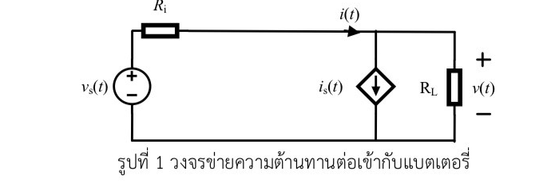

Official Problem Statement & Circuit Diagram
โจทย์สอบปากเปล่า และ รูปภาพวงจรไฟฟ้า (รูปที่ 1)

รูปที่ 1 วงข่ายความต้านทานต่อเข้ากับแบตเตอรี่และโหลด
ข้อความถอดโจทย์ต้นฉบับ (Transcribed Problem Text)
พิจารณาวงข่ายความต้านทานใน รูปที่ 1 ด้วยการใช้สมการชุดตัดหรือสมการโหนด จงหาค่าของกระแส i(t) ในหน่วยแอมป์ ณ เวลา t ∈ {0, 1, 2, ..., 2752} วินาที พร้อมหาค่าพารามิเตอร์ Eo, K, Aa, Ba, Ab, Bb, Ri และ Qn ของ vs(t) ซึ่งเป็นฟังก์ชันของเวลาของแหล่งกำเนิดแรงดันในหน่วยโวลต์ และมีนิยามว่าvs(t) = Eo − K ∫₀ᵗ i(α) dα + Aa e−Ba ∫₀ᵗ i(α) dα − Ab e−Bb ∫ₜᵗⁿ i(α) dαและกำหนด Qn คือค่าความจุประจุหรือปริมาณการเก็บพลังงานไฟฟ้าตามทฤษฎีที่ผู้ผลิตกำหนดไว้ช่วงเวลาตั้งแต่ 0 ถึง tn วินาที คือ Qn = ∫₀ᵗⁿ i(α) dα [coulomb] และ tn = 3,600 [วินาที] กำหนด RL = 10 [Ω] และกำหนด is(t) คือฟังก์ชันกระแสพึ่งพาบรรจุอยู่ในไฟล์ data303212qz02.md และ v(t) คือแรงดันตกคร่อมโหลดบรรจุในไฟล์เดียวกัน
ตารางวิเคราะห์องค์ประกอบและตัวแปรในรูปภาพ (Component & Variable Matrix)
| สัญลักษณ์ในรูป | ชื่อองค์ประกอบ | ประเภททางไฟฟ้า | การเชื่อมโยงกับโจทย์และไฟล์ข้อมูล |
|---|---|---|---|
| vₛ(t) | แบตเตอรี่ (Battery Source) | แหล่งแรงดันแบบจำลอง | สมการหลัก vₛ(t) และพารามิเตอร์ทั้ง 8 ตัวที่โจทย์สั่งให้หา |
| Rᵢ | ความต้านทานภายใน | ตัวต้านทานอนุกรม | ทำให้เกิดแรงดันตกภายใน i(t)Rᵢ (v = vₛ − iRᵢ) |
| i(t) | กระแสจ่ายจากแบตเตอรี่ | Branch Current | คำถามแรกของโจทย์ คำนวณได้ i(t) = 0.74 A คงที่ |
| iₛ(t) | แหล่งกระแสพึ่งพา | Dependent Current Source | ค่าเข้าอ้างอิงในไฟล์ data303212qz02.md (คอลัมน์ is(t)) |
| Rₗ | ตัวต้านทานภาระไฟฟ้า | Load Resistor (10 Ω) | ตัวต้านทานโหลด 10 โอห์ม ที่กิ่งขวาสุด |
| v(t) | แรงดันตกคร่อมโหลด | Node Voltage (v₁) | ข้อมูลอ้างอิงแรงดันตกคร่อมโหลดในไฟล์ data303212qz02.md |
ไฟล์อ้างอิงหลักของโจทย์:
📄 oral_exam_problem.md (ไฟล์ถอดโจทย์)
🖼️ circuit_fig1.png (รูปภาพวงจรไฟฟ้า)
📊 data303212qz02.md (ชุดข้อมูล 2,753 แถว)
📄 oral_exam_problem.md (ไฟล์ถอดโจทย์)
🖼️ circuit_fig1.png (รูปภาพวงจรไฟฟ้า)
📊 data303212qz02.md (ชุดข้อมูล 2,753 แถว)